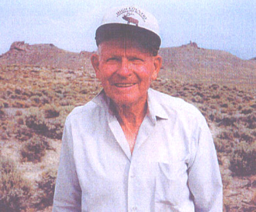

Tribute to Joel Mack Johnson

Joel Johnson
Life Timeline
- Born on 26 March, 1920
- Served in the Texas-Louisiana Mission
- Served in WWII beginning in 1941
- Married Jane Bullock 7 June, 1950
- Served as a Teacher, Father, Bishop, and Patriarch
- Died 25 February, 2009
Achievements
- Utah Lepidopterist Society
- Influenced Hundreds in Chemistry and Physics
- Blessed Hundreds as a Patriarch and Bishop
- Raised a Family in Righteousness
- Item 5